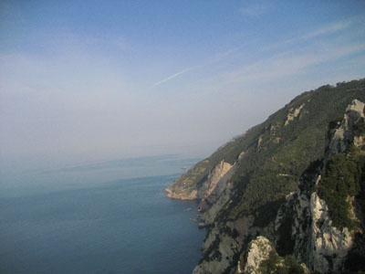

"I have always been unsatisfied with life as most people live it. Always I want to live more intensely and richly. Why muck and conceal one's true longings and loves, when by speaking one might find someone to understand them, and by acting on them one might discover one's true self?" - Everett Reuss
"I went to the woods because I wished to live deliberately, to front only the essential facts of life, and see if I could not learn what it had to teach, and not, when I came to die, discover that I had not lived. I did not wish to live what was not life, living is so dear; nor did I wish to practise resignation, unless it was quite necessary. I wanted to live deep and suck out all the marrow of life, to live so sturdily and Spartan- like as to put to rout all that was not life, to cut a broad swath and shave close, to drive life into a corner, and reduce it to its lowest terms, and, if it proved to be mean, why then to get the whole and genuine meanness of it, and publish its meanness to the world; or if it were sublime, to know it by experience, and be able to give a true account of it in my next excursion." - Henry David Thoreau
When I canoed down the Allagash River in Maine, a hundred miles in a fortnight, I put in at Telos Lake. I didn't know it then, but the name was oddly correct. The Greek word for end, goal, purpose is just that, Telos. So it is with this odyssey of mine: I will begin with an end - the end of my teen years. As you read this, I will be turning twenty years old, in Rome. But the true end, the goal in mind, is an end to what I percieve as myself. I do not wish to survive as the person I am, as I was. (Don't worry: physically, I may (we hope, will) live longer, for years even.)
"Rather than love, than money, than fame, give me truth." [Thoreau] Why this suicide? Because I know what I am. It may surprise you to know that much of my life, personality, thought is centered around deep-set shame and regret. I constantly think back over my past actions, and rebuke myself. If cowards die a thousand times before their deaths, the knowing fool dies a thousand times after.
I have wasted years of my life on nothing. I overthink everything, I am told - I would say rather that I think everything over repeatedly, and seldom gain any insight from the experience. I know no languages but English - I say that I know Greek, Latin, more: but what can I do with them without a grammar and a dictionary? Smatterings of meaning, picked up by merely being in the classroom (an easy way to get by without working, I have found.) I have written nothing worth repeating. From what I have read, I have gleaned never enough. What have I done? Nothing. I moved continents to escape the life I was living, and have found it again here in another guise. What have I done in this life, this short life of mine, that is worth saying? Nothing. This is my shame. That because I am selfish, I am lazy: beause I am lazy, I am dumb. Because I am dumb, I must inflate something in order to justify myself - because I am selfish, I inflate my ego. A cycle that must end for me to grow. [I am not looking for pity! I am stating what I believe is true. Please don't start sending me emails stating otherwise.]
I know that I have ability. The only thing stopping me is a correct definition of my goals and the means to achieve them. I want to do and be many things. The first among them is wise, the second is content, the third is helpful, the fourth is joyful. There are probably more I can think of - but these aren't on a definite level, which is where existence lies. This is something that adolesence teaches, and I think I have finally got it. The day to day is where everything happens, the rest is just conjecture. I know that I want to look back and be proud of something I have done - written a novel that isn't bad, made a friend I didn't lose, had a lover I didn't see as a lover alone but as herself. I have known of this desire for a long time: but the quotidian is where I live. I sleep in. I cook large breakfasts. I walk too slow and listen to the same songs. Eventually I go to sleep, with my eyes barely opened in the day. Day in, and day out. For twenty years. I've tried various things. Mantras, self-harm, guilt tripping, friends reminding, utilizing senses of duty, honour, love. Nothing works for me: because, at the end of the day, life is a slow process, and I think fast. So I have decided a new approach to settle the score of years and waste.
I will end my thought. I will enter an environment where life exists as do or die. I will suffer for the sake of suffering, without an exit but continuing towards the next fire. I will conquer my body so that it may in turn conquer my mind. The physical world is such a huge part of my life that I have been seeking pleasure for without acknowledging. After all, what is a good job but a security of bed, food? What is a plan for a career but a hope for medical insurane when in old age? But what am I doing now but forcing it to serve my whims, when I don't even know what those are? So I will teach my body to work with my mind towards a goal, an end, a telos, that I will find worthy of having done. Namely, a year of hiking, around some five thousand miles worth. Will I be of worth, then? Who knows. But I will be changed towards someone of worth. And that's what matters.
I could say more. I could say that I do not want to go calmly into a suburban existence, that I don't want to merely be the college professor I sometimes think I was born to be. I don't want to be another college student who thinks he is special. But it is hard to speak of these things, my aims, my wishes, my fears, without sounding like a drunk or a fool. The language I must use to voice my opinion is that of complete honesty, which is rare, and therefore easier to disregard. So I won't say more on the subject. I don't want to be portrayed like Chris McCandless, as a kid who just wanted to get away from "Things, things, things" or "You know...parents." I want to be seen as a young man going towards a goal, not fleeing a past.
Hige sceal þe heardra heorte þe cenre / mod sceal þe mare þa ure maegen lytlað. - Byrhtwold, Battle of Maldon, 312
Our resolve will be the firmer, our hearts the bolder, our courage the greater, as our strength lessens.
If all is going according to plan, I will be hiking into Rome on my birthday, the 16th of September, and will spend a few weeks resting before going on to the climatic journey. (I will have already spent two weeks in the highlands, with my friend Grant and others, just previously. Plans may already have begun to change.) I will walk for a month in Greece, before flying to New York. There I will visit friends, buy provisions, get ready. Then down to the south, to begin the Appalachian Trial. Brian may be joining me here, I am not sure. In Spring, if I have lived long enough and hard enough, I will be in Maine. I hope I will be able to hike Katahdin - it will be closed. From there I will hitch to southern California, to begin the Pacific Crest Trail (or, perhaps, the Continental Divide Trail) with Jacob. If I have enough money, I will fly to Edinburgh in the fall. That is the plan. The future itself is uncertain. I wouldn't have it any other way.
Well, I won't have much access to the internet. I am not bringing a phone. I will update this site with my whereabouts when I can. I will be writing every day, and I plan to write a travelogue when I get back. However, if you want to know I am alive, I would suggest emailing richard dot littauer at gmail dot com with a short message, telling me so. I will send out emails to the list when I can. If I stop sending emails, do not worry. I will eventually - if I don't, do not worry, either. I will have passed on doing something I am certain of, which is more than most can hope. [What's life without some morbidity, eh?]
-Richard G. Littauer
Comment if you like: